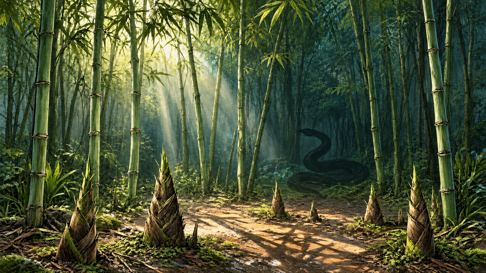
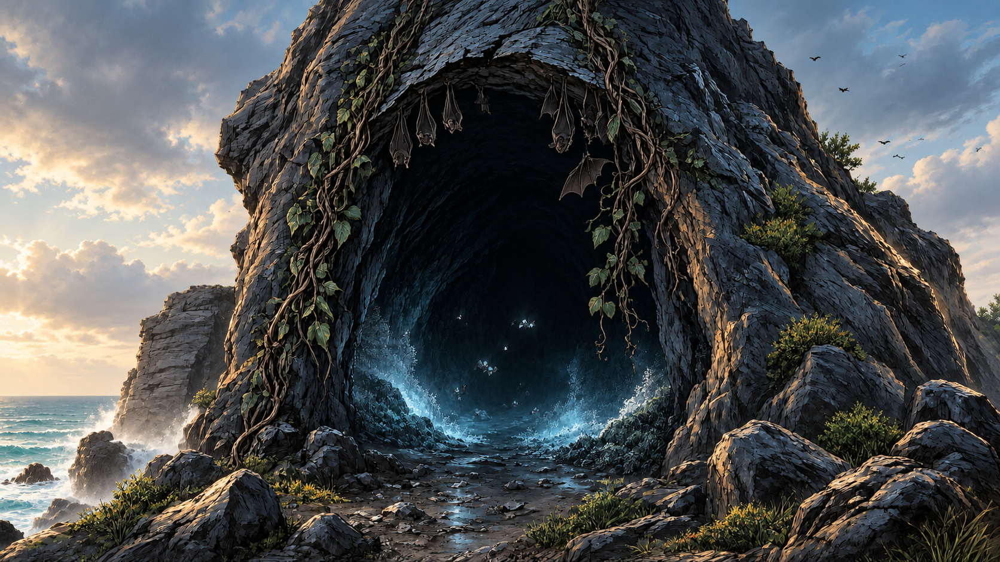
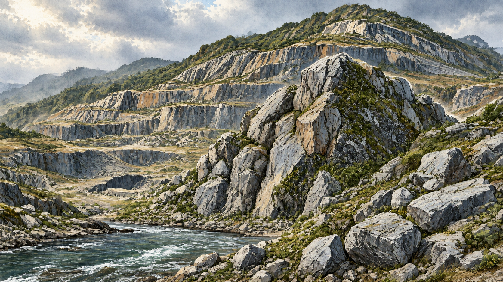

<!doctype html>
<html lang="zh-CN">
<meta charset="utf-8"><meta name="viewport" content="width=device-width,initial-scale=1">
<title>孤岛场景彩绘试稿</title>
<style>
*{box-sizing:border-box}body{margin:0;background:#17201e;color:#f3eee2;font-family:"Microsoft YaHei",sans-serif}
header{max-width:1440px;margin:0 auto;padding:28px 24px 12px}h1{margin:0 0 8px;font-size:26px}p{margin:0;color:#c8c6ba;line-height:1.7}
main{max-width:1440px;margin:0 auto;padding:12px 24px 32px;display:grid;grid-template-columns:repeat(2,minmax(0,1fr));gap:20px}
article{overflow:hidden;border:1px solid #46514a;border-radius:12px;background:#222c29;box-shadow:0 8px 24px #0005}
img{display:block;width:100%;aspect-ratio:1672/941;object-fit:cover}section{padding:12px 16px 15px;display:flex;justify-content:space-between;align-items:center;gap:12px}h2{font-size:18px;margin:0}a{color:#d8c58e;text-decoration:none}a:hover{text-decoration:underline}
@media(max-width:700px){header{padding:20px 16px 8px}main{grid-template-columns:1fr;padding:12px 16px 24px;gap:14px}h1{font-size:22px}}
</style>
<header><h1>孤岛场景彩绘试稿</h1><p>沿用游戏原场景构图，为竹林、山洞、采石场与海岸加入色彩。仅作预览，尚未替换游戏资源。</p></header>
<main>
  <article><section><h2>竹林 · 翡翠绿与林间光</h2><a href="../../../孤屿遗章-游戏 - 发布/assets/img/bamboo.png">查看原图</a></section></article>
  <article><section><h2>山洞 · 冷色海光与深蓝岩影</h2><a href="../../../孤屿遗章-游戏 - 发布/assets/img/cave.png">查看原图</a></section></article>
  <article><section><h2>采石场 · 灰岩、苔色与风尘</h2><a href="../../../孤屿遗章-游戏 - 发布/assets/img/quarry.png">查看原图</a></section></article>
  <article><section><h2>海岸 · 青蓝浅滩与金色晨光</h2><a href="../../../孤屿遗章-游戏 - 发布/assets/img/camp.png">查看原图</a></section></article>
</main>
</html>
